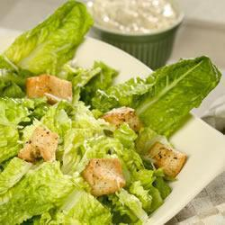

Caesar Salad

Ingredients
- 6 cloves garlic
- 8-10 tablespoons mayonnaise
- 5 anchovy fillets, minced
- 6 tablespoons grated parmesan cheese
- 1 teaspoon worcestershire sauce
- 1 tablespoon Dijon mustard
- 1 tablespoon lemon juice
- salt and pepper
- 4 table spoons olive oil
- 250g day-old bread, cubed
- 1 romaine lettuce, bite sized pieces
Recipe
- Mince 3 cloves of garlic and mix with mayonnaise, anchovies, 2 tablespoons of parmesan cheese,
Worcestershire sauce, mustard and lemon juice.
- Refrigerate until ready to be used
- Heat oil in a frying pan on medium heat.
- Cut and add the remaining 3 cloves of garlic into the hot oil
- Cook and stir until brown, then remove from pan
- Add the bread to the oil and fry until lightly brown, lightly season with salt and pepper for flavour
- Place the lettuce in a bowl and toss with dressing, parmesan cheeseand bread cubes
Information and Allergies
Care must be taken when preparing this dish as it requires the use of hot oil whcih may harm the cook.
This dish should not be prepared if you or anyone you wish to serve it to is allergic to any of the ingredients listed above.